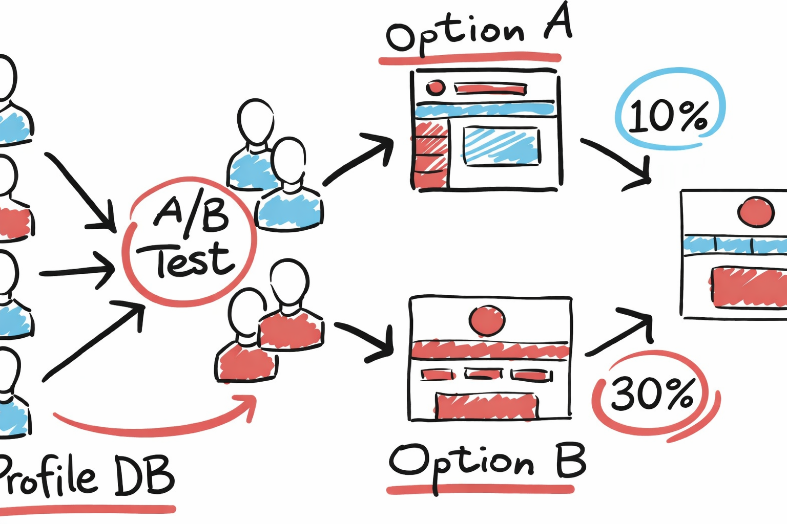
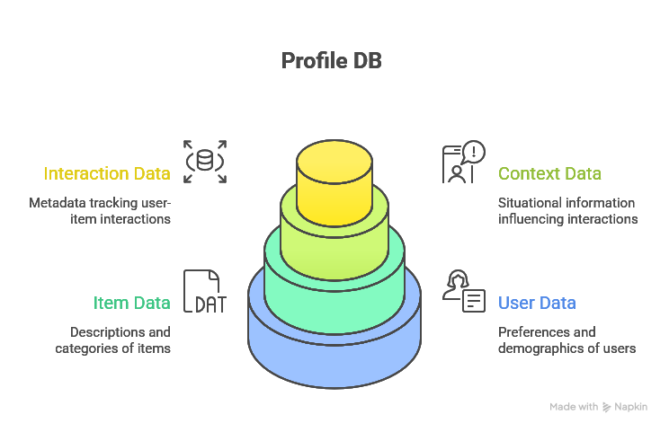

Vision
Our mission is to build intelligent systems that can accurately, ethically, and transparently replicate human personality traits from observable data—such as behavior, or multimodal signals—in order to enable more human-centered, adaptive, and empathetic technologies.
Our solution leverages lightweight, machine learning models to infer personality traits directly from user data in real time. By combining efficient feature extraction with optimized neural architectures, it enables privacy-preserving personality recognition and replication without cloud dependency
Unlike conventional personality recognition systems that rely on static user profiling, this solution performs real-time personality inference on-device, combining privacy-by-design, adaptive learning, and explainable trait modeling.
Business Model
Branding Points
This SaaS focuses on natural, respectful replication that feels human, adaptive, and aligned with real behavioral nuance.
Key usage ideas for this SaaS are:
1. Personality-Aware Experimentation
Run A/B tests not only on what content is shown, but how it is delivered—tailoring tone, timing, and interaction style to different personality profiles.
2. Explainable Performance Differences
Segmenting experiments by personality traits reduces noise in test results, leading to clearer insights and faster optimization cycles.
3. Plug-and-Play
By testing against known personality tendencies, teams avoid broad, unfocused experiments and reduce wasted traffic. Integrates with common experimentation and analytics platforms, extending existing A/B testing workflows rather than replacing them.
Technical Insight

1. User Data Layer: attributes of the user, which is the foundation of the profile.
2. Item Data Layer: entities the user interacts with.
3. Context Data Layer: situational context to each interaction.
4. Interaction Data Layer: users' interaction with items.
Demo